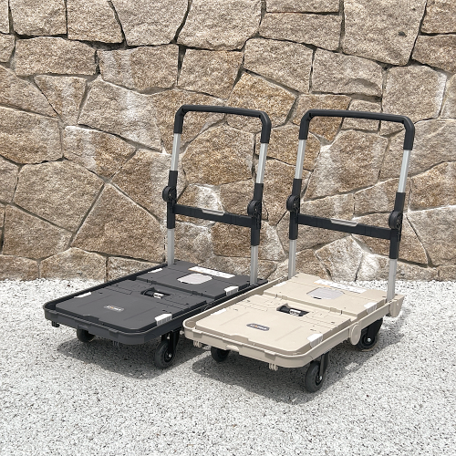
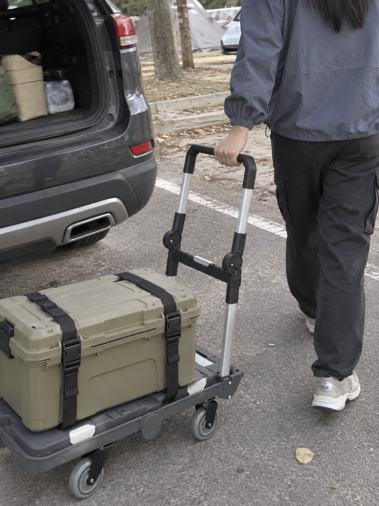
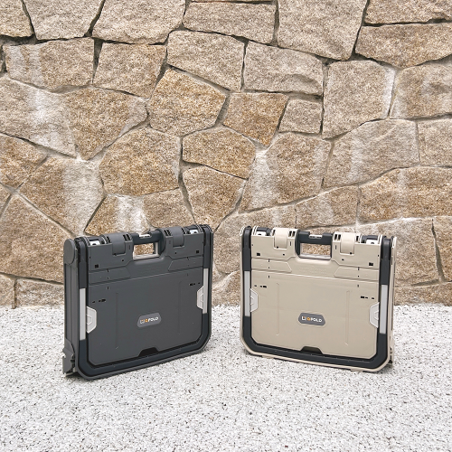
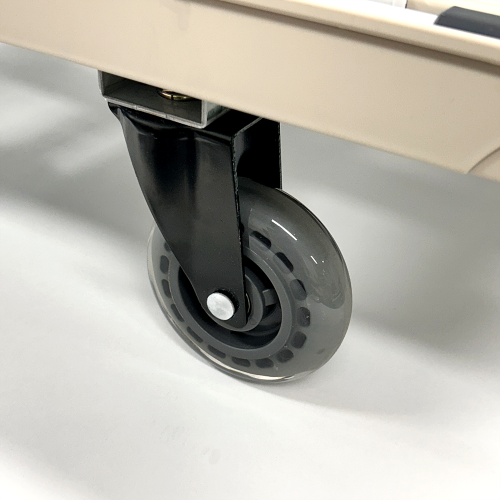

이 포스팅은 네이버 쇼핑 커넥트 활동의 일환으로, 판매 발생 시 수수료를 제공받습니다.
큐폴드 접이식카트 맥스 기본형, 캠핑 짐 여러 번 들고 옮긴다면
캠핑 짐은 트렁크에 넣을 때보다 차에서 내려 사이트까지 옮길 때 양이 실감 나죠. 박스 하나 내려놓고 다시 차로 돌아오는 일이 반복되면 손수레가 생각나요.
큐폴드 맥스 기본형은 펼쳐서 짐을 싣고 접어서 보관하는 카트예요. 로프 포함 구성이라 캠핑 박스를 옮길 도구를 찾는 분이 같이 볼 수 있어요.
1. 트렁크에서 사이트까지

카트를 고를 때는 자주 쓰는 캠핑 박스를 기준으로 보는 게 빨라요. 적재면에 박스가 어떻게 올라가는지, 허용하중 안에 가져갈 짐이 들어오는지를 보면 돼요.

짐을 손에 하나씩 들고 가는 대신 바퀴 달린 적재면에 올려 옮기는 방식이에요. 이동 동선이 긴 캠핑장이나 무거운 장보기 물건을 옮기는 상황에서 역할이 또렷하죠.
(짐 옮기는 데 기운을 다 쓰고 싶지는 않잖아요.)
💚 내 캠핑 박스에 맞는 적재면·접힌 크기 보기2. 접은 뒤의 크기

캠핑용품은 쓸 때보다 차 안에서 차지하는 자리도 중요해요. 카트가 커도 접었을 때 트렁크에 둘 공간이 맞아야 다음번에도 챙기겠죠.
판매 사진에서 본체와 손잡이가 접히는 모습을 같이 보세요. 펼친 적재면과 접힌 크기를 나눠 보면 짐을 싣는 용도와 보관할 자리가 한 번에 정리돼요.
3. 맥스 기본형 구성

확인해둔 표시 가격은 89,900원이고 오늘 상품은 맥스 기본형에 로프가 포함된 구성이에요. 다른 크기나 부속품 옵션과 섞이지 않게 고르면 돼요.
바퀴 상세 사진은 주로 다닐 바닥을 생각하며 보세요. 캠핑장에서 짐을 옮기는 일뿐 아니라 주말 장보기에도 쓸 계획이라면 일상에서 꺼낼 이유가 하나 더 생겨요.
(쓰고 나서 접어둘 자리가 정해져 있으면 마음도 편하죠.)
다음 캠핑에서도 박스를 여러 번 들고 오갈 예정이라면, 아래 규격을 내 짐 크기와 맞춰 카트를 골라보세요.
💚 큐폴드 맥스 기본형·로프 포함 구성 고르기가격은 2026년 10월 6일 확인한 상품 표시 가격으로, 옵션·배송비·구매 시점에 따라 달라질 수 있어요.